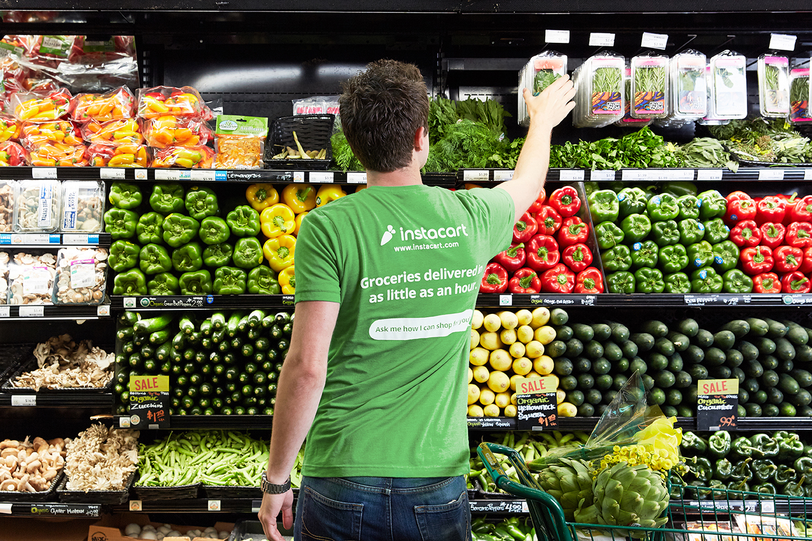
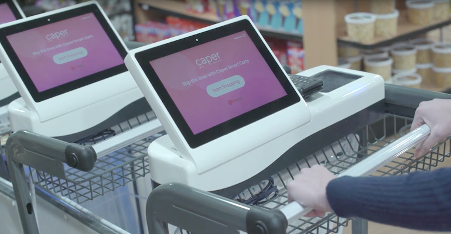
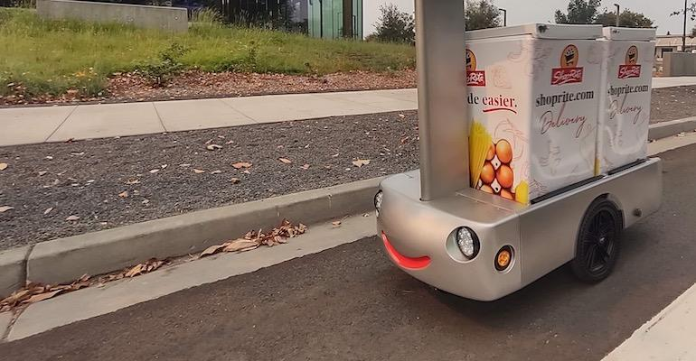
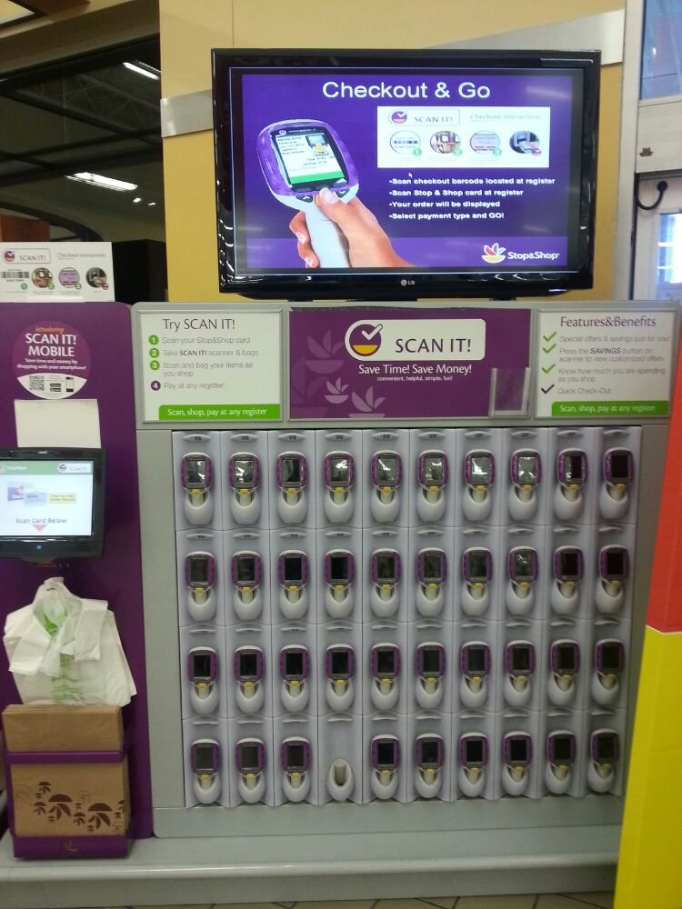
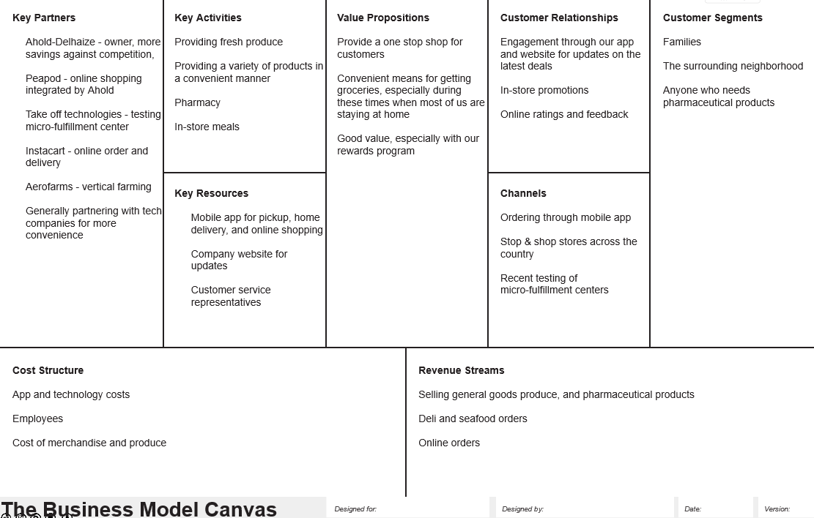

Our project, the One Stop Shop,
Core team members:
- Team Lead: John Palmer III
- Data Analyst: Daniel Adams
- Social Media Specialist: Tiki Tokara
- Information Manager: Bob Roberts
For our stakeholders: Executives and Managers of stores
What is Project One Stop Shop?
Project One Stop Shop is an ongoing project for Stop and Shop to have solid competition against competitors. The scope of this project is to address the current trends among grocery consumers, the external competitive environment, and what Stop & Shop needs to do to not only keep up, but to thrive in the future.
So far we made progress with milestones:
- Start Date: September 5, 2021
- Estimated Completion: June, 2024
- Process Impacted: Informing the future of shopping
| Milestone | Description |
|---|---|
| Structure | Structure concepts and key topics to touch upon in reports through research |
| Define Landscape | A more detailed approach, defining the surrounding “landscape” that surrounds my industry |
| SWOT, BMA | Develop SWOT and BMA for the company |
| Report | Sythesize information into report for clients. This also includes finding data or graphics to present in digital presentation |
| Presentation | Highlight Key points in report, introducing new ideas. Make site template |
Sponsor Approval: Sharon Stoerger, September 5, 2021
As we go along, I intend to implement more surveys over time to receive feedback on our predictions.
Ethics
During research, I would like to let you all know that we practice discretion and hold privacy among competitors and customers alike. Our team does not ask for information under false pretense and will be as transparent as possible during our data collection.
Stay at Home
Due to our encounter with COVID-19, many stores have had to adapt to such conditions. Like any supermarkets, Stop & Shop has to keep up with the demands of customers. Customers nowadayas are becoming more educated through technology and with more knowledge of variety.
With the recent pandemic, stores have tried to keep up with the growing stay at home lifestyle. This lifestyle gave way to more technology to be used for online ordering, pickup, and general convenience. With AI and the Internet of Things on the rise, the future of shopping will be different.
At the moment, Stop and Shop is providing everything it can to be a one stop shop, including a pharmacy to administer vaccines. But, technology, and the convenience it brings, is a major aspect as a result of recent events and the advancement of the convenience of shpopping in general
Starting from our casheerless self-service registers, this is only the beginning. We have done well with our partnership with Instacart to have made Stop & Shop express. However, a growing trend of covnenience and "frictionless" shopping as been growing in the tech aspect as well.
Technology will allow us to focus on our core values even more, as was mentioned by Techcrunch. Amazon's recent partnership with Wholefooods has borught about the recent innovation of "Just Walk out" the technology involved, using AI and computer vision, we will get into later. This technology allows for shoppers to scan their phone with their payment, take what they need and "Just Walk Out".
Kroger is a strong competitor on the market. Kroger has made their equivalent of our delviery service, "Kroger Delivery Now" to provide for the same 24/7 delivery service that we have. Krogery Delivery now also utilizes an app to provide the experience of a "virtual convenience store" to checkout and receive deliveries from.
In addition, Kroger's partnership with Instacart also extends towards Caper, a company that utilizes AI and Machine learning for "Smart Carts". This technology is another advancement towards convenience. Similar to "Just Walk Out". The Smart Cart holds a customer's groceries, but also allows for a customer to scan and checkout right at their cart
Shoprite, a close substitute to our brand has also introduced new technologies as well. torotoise's remote-controlled zero-emission delivery carts allwo for online groceries to be delivered, under the control tele-operating trained drivers.
The common technologies throughout are AI, Machine Learning, and soon the Internet of Things
From what we learned, our parent company, Ahold Delhaize is already on baord with the frictionless trend. Your company is in the early stages of the SCAN IT! app, allowing for cusotmers to scan their items, and when exiting in the designated checkoput lane, the store's payments are received
Our partnership with Aerofarms is the start of having a system to bring stores consistently good quality produce with lesser use of resources.
I have found that Ahold is having ideas of self managed distribution centers as opposed to having to deal with an outside distributor. Now, they have reached 65% of the volume of a distribution center and intends to keep going. This will give Stop & Shop more control over how their product is distributed and more awareness of what is already put out on shelves.
SWOT Analysis
S - strengths
We have already established ourselves as the largest food chain in the Northeastern US, located in the center of many neighborhoods. We have had a long history over 107 years. We do have the one-stop-shop idea down well. In additon we have pharmacy services that keep up with the latest issues, such as providing the latest vaccines.
Main Demographics:
- Stop & Shop is the eighth most used grocery delivery service with Walmart in first place
- Stop & Shop has a high share of 30 - 39 year old customers compared to online shoppers
- Stop & Shop has a large share of customers with a high income compared to online shoppers
- Stop & Shop customers are more likely to live in a small family
W - Weaknesses
Because of our already good variety of selections, customers will expect us to have so much, even things your stores might not even have. Our involvement with technology will lead to even more demands, as some produce employees have reported that instacart shoppers would sometimes be looking for products not even in a particular store. Even moreso, some people in other stores reported being filled with instacart shoppers.
Even when keeping up with demographic and social changes, we can only provide for so much at a time. Customer satisfaction will plateau at some point.
Opportunities
Technology - As already discussed, we have a lot of opportunites and possibilities with newer technologies to make the shopping experience more streamlined and convenient.
Threats
- Similar competitors like Shoprite allow for alternatives
- Cheaper alternatives - Like Lidl and Aldi, have cheaper prices to attract more customers
- Advancing technology - we will have to keep up to not be left behind other brands with our technology
- A merger is always a likely threat, but will not happen for a while due to how prominent Ahold-Delheize is.
Business Model Analysis
Here is an overview of our processes.
Future
Stop & Shop can fully advance to the latest technologies; even to the likes of Wholefoods. A frictionless and smooth shopping experience is at its peak, as Stop & Shop adopts the walk-out casheerless model. An app allows for in-store scanning for checkout. The same app allows for pharmacy appointments, in-store pick ups, and delivery. Vertical farming has become the norm, and produce has consistent and efficient output. Warehouses are completely self-managed by Stop & Shop workers. AI and IoT technology have automated inventory tracking and have allowed for warehouses and families to have nearly real time information of what they need.